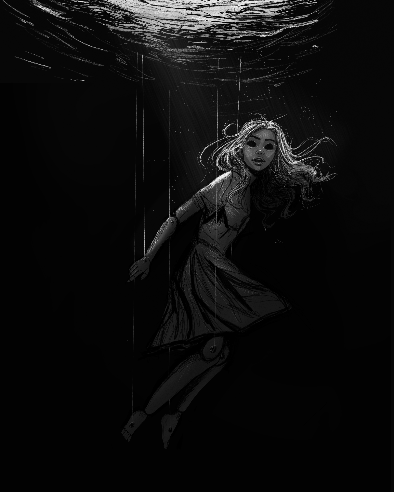

October 13, 2026
red remains
The dreams bleed into waking life.
Her thoughts become muddled.
And he is there—
to listen,
to soothe,
to linger,
to suffocate.
The girl loves her twin brother—everyone does—but is it
too much to ask for some focused attention? When a ghost-like
creature brings the girl a gift on her fourteenth birthday, she
doesn’t care how alarming it is because it’s all for her.
But as the ghost learns to communicate, he demands more from the
girl until he is all she knows…until everyone she loves vanishes
and only red remains.